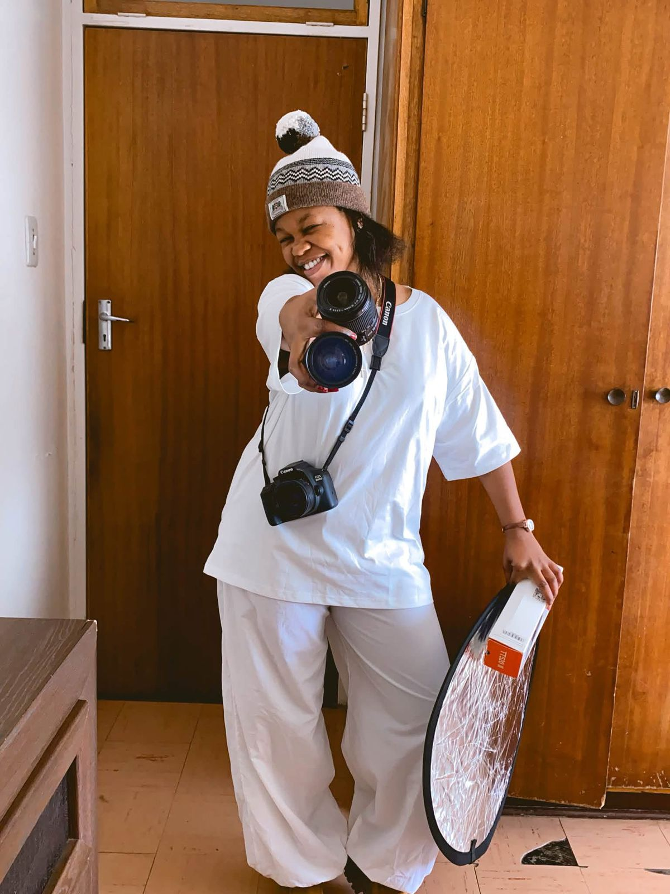

My Story
It started with a camera I did not own 😅
I discovered photography in April 2021. The funny part is that by the second day of thinking about it, I was already calling myself a photographer. I started editing people's pictures and, to my surprise, people loved my work.
At that time I had no money for a camera. Then someone contacted me and offered to let me hire his camera whenever a client wanted a photoshoot. I took the opportunity without hesitating. I genuinely enjoyed photography, and I loved being a woman doing work people usually associate with men.
I believe in speaking life into what you want to become. I called myself a photographer before I owned a single lens, and the customers came. I kept shooting with a hired camera until I started university.
In my first year at iYunivesithi Walter Sisulu I began saving, and I used part of my NSFAS money to buy my own camera, because my parents could not afford to buy one for me. Since then I have kept investing in equipment and in my skills.
My long-term goal is simple: open my own professional photography studio after I complete my Advanced Diploma.

images/work/camera2.jpgI declared it before I owned it — and then I worked for it.
Education & Career Journey
Step by step, year by year
-
Until Matric
School taught me resilience.
I've never considered myself someone who had everything figured out or everything come naturally. What I'm proud of is that even when things became difficult, I kept going.
-
Gap Year
A year to find myself
After matric I took a break from education to rest, explore my interests and understand what I am naturally good at.
-
April 2021
Photography found me
I started editing photos, hired a camera for shoots, and Tn.m_Photography began.
-
2022
Admitted to iYunivesithi Walter Sisulu
Diploma in ICT Business Analysis – Extended Programme.
-
Third Year
I changed direction
I moved from ICT Business Analysis to ICT in Application Development, because I discovered that I really enjoy coding.
-
2025
Diploma completed & graduated
In 2025, I completed my Diploma in ICT Application Development and graduated.
-
2026
Advanced Diploma in ICT in Application Development
Currently studying and completing my Advanced Diploma this year, while taking extra technology tutorials to prepare for the industry.
-
Next
Software Developer & studio owner
Build a career in software development and open my own photography studio.
Why I love technology
I have always liked solving things
In primary and high school, Mathematics and Accounting were among my favourite subjects. I enjoy numbers, logic and problems that have a solution waiting somewhere. Purely theoretical work has never excited me in the same way.
The school projects I remember most are the practical ones — building a circuit with a light bulb, and making a model cell phone tower. Those projects said something about how my mind works.
That same practical mindset is what moved me into Application Development. When I discovered coding at university, I fell in love with it. It is the same feeling as those school projects, just on a screen.
- Favourite school subjects: Mathematics and Accounting
- I enjoy numbers, logic and problem solving
- I prefer building over memorising
- Practical projects: circuits and a model cell phone tower
- Discovered coding at university and never looked back
- Goal: become a Software Developer
Lessons From My Journey
The good days and the hard ones both taught me something
University has given me good experiences and difficult ones. I have met kind people who helped me, and I have met people who made things harder. I faced situations I did not enjoy at the time, and they matured me.
I do not regret any of it. Those moments taught me how to stand on my own, how to choose my circle carefully, and how to keep going when things do not go my way.
Challenges can become lessons, and lessons help shape who we become.